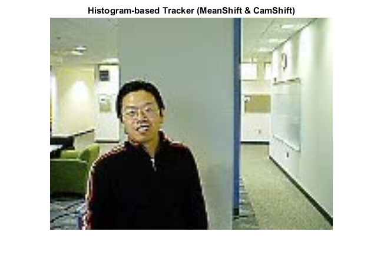
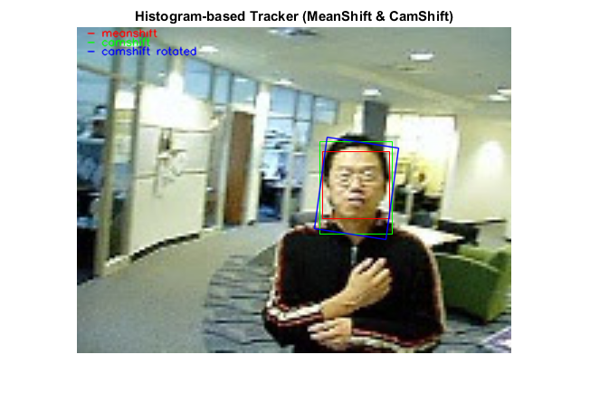

Histogram-based face tracker with CAMShift
In this demo, we implement a simple face tracker applied on an input video.
Sources:
Contents
Video
Create the video file reader
if true v = which('vipcolorsegmentation.avi'); s = 3; % scale since frames are a bit too small win = [40 45 25 25] * s; % hardcoded object location else v = which('visionface.avi'); s = 1; win = [275 125 75 100]; end if isempty(v) if true filtspec = strjoin(strcat('*.', {'avi','mpg','mpeg','mp4','wmv'}), ';'); [fn,fp] = uigetfile(filtspec, 'Select a video file'); if fp==0, error('No file selected'); end v = fullfile(fp,fn); else v = 0; end s = 1; win = []; end vid = cv.VideoCapture(v); assert(vid.isOpened(), 'Could not initialize capturing');
Read the first video frame which contains the object to track
img = vid.read(); assert(~isempty(img), 'Failed to read frame'); if s ~= 1, img = cv.resize(img, s, s); end sz = size(img);
Options
% visualization options use_hg = false; vis_prob = false; str = {'meanshift', 'camshift', 'camshift rotated'}; clr = 255 * eye(3); % mean shift termination criteria crit = struct('type','Count+EPS', 'maxCount',10, 'epsilon',1.0);
Prepare plot
hImg = imshow(img); title('Histogram-based Tracker (MeanShift & CamShift)') if use_hg hRectMS = rectangle('Position',win, 'EdgeColor','r'); hRectCS = rectangle('Position',win, 'EdgeColor','g'); hLineCS = line(NaN, NaN, 'Color','b'); end
Detect a face to track
Define the object region. This initial window is typically found using some sort of object detection. Optionally, you can select the object region using your mouse with IMRECT. The object must occupy the majority of the region.
if isempty(win) if false % automatically detect biggest face in image xmlfile = fullfile(mexopencv.root(),'test','haarcascade_frontalface_alt2.xml'); obj = cv.CascadeClassifier(xmlfile); faces = obj.detect(cv.equalizeHist(cv.cvtColor(img, 'RGB2GRAY'))); clear obj if ~isempty(faces) %TODO: we can further improve this by detecting nose within face, % as it provides more accurate measure of skin tone with less % background pixels [~,idx] = max(cellfun(@(f) cv.Rect.area(f), faces)); win = faces{idx}; end elseif ~mexopencv.isOctave() && mexopencv.require('images') % interactively select region with mouse hRect = imrect(gca); setColor(hRect, clr(1,:)/255); win = wait(hRect); mask = uint8(createMask(hRect, hImg) * 255); delete(hRect); win(1:2) = win(1:2) - 1; else % fallback to using an input dialog to prompt for region win = inputdlg(strcat('win.',{'x','y','w','h'}), 'Window', 1); win = str2double(win); end end assert(~isempty(win) && cv.Rect.area(win) > 0, 'invalid object region'); win = cv.Rect.intersect(win, [0 0 sz(2) sz(1)]); winMS = win; winCS = win; % set up ROI mask marking the object to track if true mask = zeros(sz(1:2), 'uint8'); mask = cv.rectangle(mask, win, 'Color',255, 'Thickness','Filled'); elseif true w = win + [1 1 0 0]; mask = false(sz(1:2)); mask(w(2):w(2)+w(4), w(1):w(1)+w(3)) = true; end
Facial feature to track (hue color)
Set the object, based on the hue channel of the first video frame. (Convert to HSV color space and calculate the hue histogram of object)
imgHSV = cv.cvtColor(img, 'RGB2HSV'); if true H = cv.calcHist(imgHSV(:,:,1), 0:180, 'Mask',mask); else hue = imgHSV(:,:,1); H = histc(imgHSV(mask), 0:179); end
Track the face
Track and display the object in each video frame. The while loop reads each image frame, converts the image to HSV color space, then tracks the object in the hue channel where it is distinct from the background. Finally, the example draws a box around the object and displays the results.
while ishghandle(hImg) % next video frame img = vid.read(); if isempty(img), break; end if s ~= 1, img = cv.resize(img, s, s); end % probability according to histogram empirical model imgHSV = cv.cvtColor(img, 'RGB2HSV'); if true D = cv.calcBackProject(imgHSV(:,:,1), H, 0:180); else [~,idx] = histc(imgHSV(:,:,1), 0:179); D = H(idx); end % normalize the probability if true D = cv.normalize(D, 'NormType','MinMax', ... 'Alpha',0, 'Beta',1, 'DType','double'); else D = double(D); D = (D - min(D(:))) ./ (max(D(:)) - min(D(:))); end % find new window if true %TODO: camshift tends to give larger windows?? % so we use the meanshift window winCS = winMS; end winMS = cv.meanShift(D, winMS, 'Criteria',crit); [boxCS,winCS] = cv.CamShift(D, winCS, 'Criteria',crit); %winCS = cv.RotatedRect.boundingRect(boxCS); % visualize backprojection instead of raw frame if vis_prob img = cv.cvtColor(uint8(D * 255), 'GRAY2RGB'); end % draw meanshift and camshift tracking windows boxPts = cv.RotatedRect.points(boxCS); if use_hg set(hRectMS, 'Position',winMS); set(hRectCS, 'Position',winCS); set(hLineCS, 'XData',boxPts([1:4 1],1), 'YData',boxPts([1:4 1],2)); else img = cv.rectangle(img, winMS, 'Color',clr(1,:)); img = cv.rectangle(img, winCS, 'Color',clr(2,:)); img = cv.polylines(img, {boxPts}, 'Color',clr(3,:), 'Closed',true, ... 'LineType','AA'); for i=1:3 % draw legend img = cv.putText(img, ['- ' str{i}], [10 i*10], ... 'Color',clr(i,:), 'FontScale',0.4, 'LineType','AA'); end end % show result set(hImg, 'CData',img); pause(0.05); end
Release the video reader
vid.release();